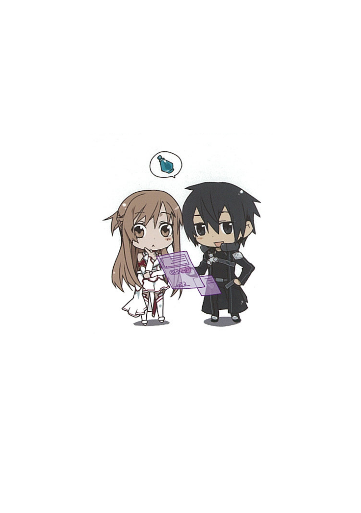

<!-- あとがき -->
<div class="swiper-slide" id="page4">
	<span id="page4main" style="overflow-x:hidden;">
			<div class="page4top">
				
				
			</div>
			<div class="content-wrapper">
			<p id="afterstory"><span id="afterword">あとがき</span></p>

	<p>この『ソードアート・オンライン』は、七年前つまり二○○二年の電撃ゲーム小説大賞に応募するために、生まれて初めて書いた長編小説です。</p>

	<p>しかしどうにか完成には漕ぎ着けたものの、原稿が当時の枚数上限である百二十枚を遥かにオーバーしてしまい、</p>

	<p>それを規定内まで削る根性と能力が私にはなく、「もういいんだ……」と呟きつつ壁を向いて膝を抱えてみたりしました。</p>

	<p>とはいえ貧乏性の私のこと、原稿をすっぱり削除もできず、「ならネットで公開してみようかなあ」と思ってウェブサイトを開設したのがその年の秋です。</p>

	<p>まったくもって幸運なことに、公開当初から思いがけず多くの方に好意的な感想を頂くことができまして、</p>

	<p>それをモチベーションに続編、番外編、また続編とシリーズを書きつぐうち、気付けばなんと六年が経っておりました。</p>

	<p>時は流れて二○○八年、やっとこ「もう一度トライしてみようか」という気になれた私は、</p>

	<p>当時完成したばかりだった別作品を（またしても規定枚数ぶっちぎりだったものの今度はどうにか百二十枚ぎりぎりまで削り）第15回電撃小説大賞に応募し、数多の幸運にも恵まれまして畏れ多くも大賞を頂くことができました。</p>

	<p>しかも幸運はそこでとどまりませんでした。</p>

	<p>私が無軌道に書き溜めてきたこの『SAO』シリーズの原稿を読んでくださった担当編集さんから、</p>

	<p>「これも出版しましょう！」とのひと言を頂いたときの嬉しさと感動は忘れることができません。</p>

	<p>とは言え、一抹の不安を感じたのもまた事実でした。</p>

	<p>なぜならこの作品はここに列挙するスペースがないほどに数々の問題点を内包しており、</p>

	<p>その最たるものとして「いままでネットで公開していたものを、出版するからといって突然取り下げてよいのか」という迷いがあったからです。</p>

	<p>しかしながら、出版の判断を頂けたのは、本当に針の穴を通すようなタイミングの合致があったゆえのことなのも確かでした。</p>

	<p>ちょうど執筆がひと段落した直後だったこと、ネットゲームというものが社会的に認知されはじめていたこと、</p>

	<p>そして何より、私の担当についてくださったのが三木・〈仕事が恋人〉・一馬さんでなければ（通常業務で忙殺される中、全原稿をたった一週間で読破してくださったことには本気で驚愕しました）この話は有り得なかったろうと考えれば、</p>

	<p>この一生に一度級の幸運連鎖に乗らなきゃゲーマーじゃない……いえ、作家になんかなれない！　と決意するに至り、</p>

	<p>こうしてペーパーメディア版『ソードアート・オンライン１　アインクラッド』を上梓させて頂くこととなった次第です。</p>

	<BR>
	<p>この作品は、「ネットゲームって、仮想世界ってなんだろう」というテーマでひたすら創作を続けてきた私の原点です。</p>

	<p>許されるならば、その終着点まで皆様とご一緒させて頂ければ幸いです。</p>

	<BR>
	<p>「近未来仮想ゲームとしてのファンタジー」という厄介な設定のお話を見事なデザインの数々で彩り、</p>

	<p>そこで戦うキャラクターたちを生きいきと描き出してくださったイラストレーターのabecさん、</p>

	<p>また数々の問題点をはらんだ初稿を丁寧に読み込み、生まれ変わらせてくださった担当の三木さん、</p>

	<p>本当にありがとうございました。</p>

	<p>そして今まで長い間ウェブ上で『ソードアート・オンライン』を応援してくださった多くの方々にも、心よりお礼を言わせて頂きます。</p>

	<p>皆様の励ましがなければ、この本が世に出ることはもちろん、『川原礫』としての私もありませんでした。</p>

	<p>最後になりましたが、もちろん、この本を手に取りここまで読んでくださったあなたにも、最大の感謝を！</p>

	<p style="text-align:right;">二○○九年一月二十八日
		<BR>川原礫</p>
</div>
</span>
</div>
